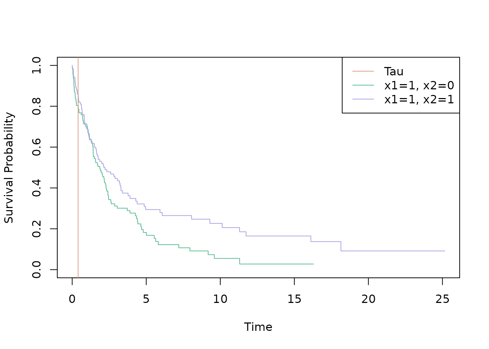
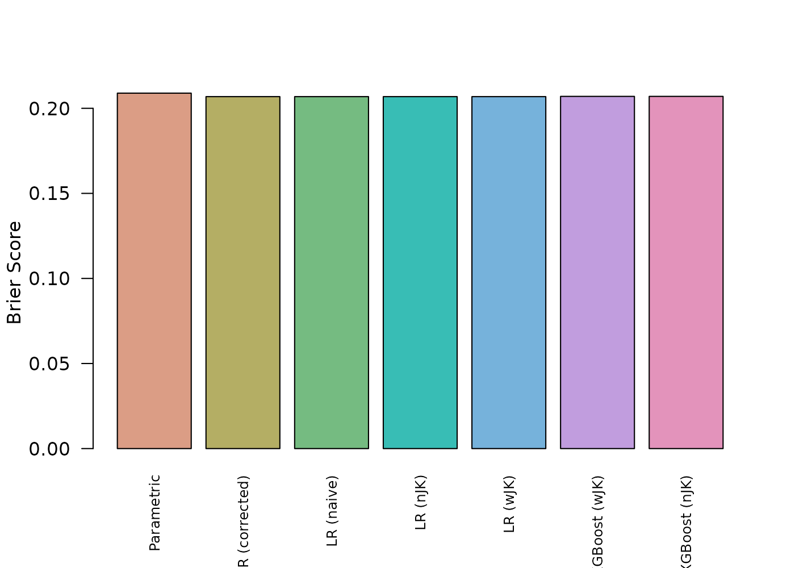

This vignettes illustrates the use of the package with simulated data, which we also used in our publication.
With generate \(500\) observations. For each subject \(i\), the values of two binary covariates. Time to event \(t^*_i\) is generated from a log-logistic distribution with shape \(1\) and scale \(\exp(b_0+b_1x_{i1}+b_2x_{i2})\) with \(b_0=1, b_1=-0.5, b_2=0.5\). Time to censoring \(c_i\) is generated from an exponential distribution with parameter \(\lambda_{cens}=0.1\). The dichotomized outcome \(Y=I(T^*\geq\tau)\) of the \(n\) independent with a log-logistic distribution then follows:
\[ p=P(Y=1|X=x) = P(T^*\geq \tau | X=x) = \left(1+\exp(-(-\ln(\tau)+b_0+b_1x_1+b_2x_2))\right)^{-1} \]
This means that both a parametric survival model and logistic regression match the data generating mechanism.
# For rllogis:
library(flexsurv)
#> Loading required package: survival
set.seed(123)
# 0.27 for 50% censoring rate
lambda_c <- 0.10 # ~ 25% censoring rate
b0 <- 1
b1 <- -0.5
b2 <- 0.5
shape <- 1
tau <- 5
n <- 500
x1 <- rbinom(n, 1, 0.5)
x1 <- x1 - 1 * (x1 == 0)
x2 <- rbinom(n, 1, 0.5)
scalevec <- exp(b0 + x1 * b1 + x2 * b2)
t.star <- rllogis(n, shape = shape, scale = scalevec)
cens <- rexp(n, lambda_c)
delta <- 1 * (t.star <= cens)
t <- pmin(t.star, cens)
df <- data.frame(t, delta, x1, x2)
test_data <- data.frame(x1 = c(1, 1), x2 = c(1, 0))
test_data_true_probs <- 1 - pllogis(tau,
shape = shape,
scale = exp(b0 + test_data$x1 * b1 + test_data$x2 * b2)
)The following Kaplan-Meier plot shows the groups, for which we want to make predictions.
library(survival)
filtered_df <- merge(df, test_data)
fit <- survfit(Surv(t, delta) ~ x1 + x2, data = filtered_df)
strata <- names(fit$strata)
cols <- hcl.colors(length(strata) + 1, palette = "Dynamic")
plot(fit, col = cols[-1], xlab = "Time", ylab = "Survival Probability", lty = 1)
legend("topright", legend = c("Tau", strata), col = cols, lty = 1)
abline(v = 0.4, col = cols[1])
The table shows the corresponding true probabilities \(p\) at \(\tau\).
tplt <- test_data
tplt[["True Survival Probability"]] <- test_data_true_probs
knitr::kable(tplt)| x1 | x2 | True Survival Probability |
|---|---|---|
| 1 | 1 | 0.3521874 |
| 1 | 0 | 0.2479757 |
With the package ?IPCWJK, we can for example calculate
the IPCW weights with ipcw_weights().
library(IPCWJK)
w <- ipcw_weights(df, tau, time_var = "t", status_var = "delta")
hist(w,
breaks = 30, main = "Histogram of IPCW Weights",
xlab = "IPCW Weight", col = "lightblue", border = "grey"
)This can be used to calculate a Brier score.
# This is ok, as the censored observations before tau are not used
y <- 1 * (df$t > tau)
brier <- function(pred) {
sum(w * (pred - y)**2) / sum(w)
}Now we can start to model the data.
Model Based Standard Errors
These models use standard errors calculated from the fitting process.
Parametric Model
With a parametric survival model, we can match the data generating mechanism.
all_results <- list()
library(survival)
parmmodel <- survreg(Surv(t, delta) ~ x1 + x2, data = df, dist = "loglogistic")
parmmodel
#> Call:
#> survreg(formula = Surv(t, delta) ~ x1 + x2, data = df, dist = "loglogistic")
#>
#> Coefficients:
#> (Intercept) x1 x2
#> 0.9442538 -0.5457500 0.4917848
#>
#> Scale= 0.9492391
#>
#> Loglik(model)= -840.9 Loglik(intercept only)= -869.1
#> Chisq= 56.45 on 2 degrees of freedom, p= 5.51e-13
#> n= 500Based on the model we can predict the survival probability at \(\tau\) and get the standard error of the
prediction using the delta method with the
deltamethod_from_model() function.
pred_fun <- deltamethod_from_model(parmmodel, tau)
preds <- pred_fun(test_data)
brier_score <- brier(pred_fun(df)$prediction)
all_results[["Parametric"]] <- list(preds = preds, brier = brier_score)
knitr::kable(preds)| prediction | lower | upper | se |
|---|---|---|---|
| 0.3191662 | 0.2546988 | 0.3836337 | 0.0328916 |
| 0.2182849 | 0.1662348 | 0.2703350 | 0.0265562 |
Logistic Regression with logitIPCW
With mets::logitIPCW() we can use the adjusted variance
estimation (Blanche, Holt, and Scheike 2023;
Holst, Scheike, and Hjelmborg 2016; Scheike, Holst, and B.Hjelmborg
2014). deltamethod_from_model() allows us to both
use the naive and corrected estimation.
library(mets)
logitipcw_m <- logitIPCW(Event(t, delta) ~ x1 + x2, time = tau, data = df)
logitipcw_m
#>
#> n events
#> 500 259
#>
#> 500 clusters
#> coeffients:
#> Estimate Std.Err 2.5% 97.5% P-value
#> (Intercept) 0.95554 0.18334 0.59620 1.31487 0e+00
#> x1 0.70741 0.12264 0.46703 0.94779 0e+00
#> x2 -0.84585 0.23915 -1.31458 -0.37711 4e-04
#>
#> exp(coeffients):
#> Estimate 2.5% 97.5%
#> (Intercept) 2.60007 1.81522 3.7243
#> x1 2.02874 1.59525 2.5800
#> x2 0.42919 0.26859 0.6858This does predictions with the corrections …
pred_fun <- deltamethod_from_model(logitipcw_m, tau)
preds <- pred_fun(test_data)
brier_score <- brier(pred_fun(df)$prediction)
all_results[["LR (corrected)"]] <- list(preds = preds, brier = brier_score)
knitr::kable(preds)| prediction | lower | upper | se |
|---|---|---|---|
| 0.3063786 | 0.2207436 | 0.3920137 | 0.0436913 |
| 0.1593662 | 0.0943708 | 0.2243616 | 0.0331609 |
… and this does use the naive approach
pred_fun <- deltamethod_from_model(logitipcw_m, tau, naive = TRUE)
preds <- pred_fun(test_data)
brier_score <- brier(pred_fun(df)$prediction)
all_results[["LR (naive)"]] <- list(preds = preds, brier = brier_score)
knitr::kable(preds)| prediction | lower | upper | se |
|---|---|---|---|
| 0.3063786 | 0.2193108 | 0.3934464 | 0.0444223 |
| 0.1593662 | 0.0936020 | 0.2251305 | 0.0335532 |
IPCW Jackknife Based Standard Errors
These models use standard errors calculated with the jackknife
approach. We include our weighted approach ("wJK") and the
naive approach ("nJK"). See ?IPCWJK for more
details.
Logistic Regression with Jackknife
Here we use the ipcw_logistic_regression() function.
logreg <- ipcw_logistic_regression(df, tau,
time_var = "t",
status_var = "delta"
)
logreg
#> IPCW Model
#> -----------
#> Model name: IPCW Logistic Regression
#> Tau (time horizon): 5
#> Time variable: t
#> Status variable: delta
#> Training variables: x1, x2
#> Number of training samples: 500
#> Number of unusable training samples: 116
#> Number of (effective) training samples: 500
#> Train Brier score: 0.207These use the weighted jackknife …
preds <- predict(logreg, test_data)
brier_score <- brier(predict(logreg, df)$prediction)
all_results[["LR (nJK)"]] <- list(preds = preds, brier = brier_score)
knitr::kable(preds)| prediction | lower | upper | se |
|---|---|---|---|
| 0.3063786 | 0.2261134 | 0.4003947 | 0.0448098 |
| 0.1593662 | 0.1038000 | 0.2368180 | 0.0336799 |
… and these the unweighted jackknife.
preds <- predict(logreg, test_data, naive = TRUE)
brier_score <- brier(predict(logreg, df, naive = TRUE)$prediction)
all_results[["LR (wJK)"]] <- list(preds = preds, brier = brier_score)
knitr::kable(preds)| prediction | lower | upper | se |
|---|---|---|---|
| 0.3063786 | 0.2260775 | 0.4004441 | 0.0448321 |
| 0.1593662 | 0.1037759 | 0.2368648 | 0.0336976 |
XGBoost Binary Classifier with Jackknife
Here we use the ipcw_xgboost() function. As it is a
machine learning model, based on a boosted learning process, there is no
parametric calculation of the standard error possible.
xgb <- ipcw_xgboost(df, tau,
time_var = "t",
status_var = "delta"
)
xgb
#> IPCW Model
#> -----------
#> Model name: IPCW XGBoost
#> Tau (time horizon): 5
#> Time variable: t
#> Status variable: delta
#> Training variables: x1, x2
#> Number of training samples: 500
#> Number of unusable training samples: 116
#> Number of (effective) training samples: 500
#> Train Brier score: 0.207
#> Additional information:
#> - params_passed : $objective
#> [1] "binary:logistic"
#>
#> $booster
#> [1] "gblinear"
#>
#> $eta
#> [1] 0.1
#> These use the weighted jackknife …
preds <- predict(xgb, test_data)
brier_score <- brier(predict(xgb, df)$prediction)
all_results[["XGBoost (wJK)"]] <- list(preds = preds, brier = brier_score)
knitr::kable(preds)| prediction | lower | upper | se |
|---|---|---|---|
| 0.3047837 | 0.2254286 | 0.3977294 | 0.0442901 |
| 0.1688837 | 0.1148774 | 0.2413561 | 0.0321043 |
… and these the unweighted jackknife.
preds <- predict(xgb, test_data, naive = TRUE)
brier_score <- brier(predict(xgb, df, naive = TRUE)$prediction)
all_results[["XGBoost (nJK)"]] <- list(preds = preds, brier = brier_score)
knitr::kable(preds)| prediction | lower | upper | se |
|---|---|---|---|
| 0.3047837 | 0.2253932 | 0.3977780 | 0.0443120 |
| 0.1688837 | 0.1148538 | 0.2413986 | 0.0321209 |
Comparison
We will compare the results of the models.
cols <- hcl.colors(length(all_results), palette = "Dynamic")
brier_scores <- sapply(all_results, "[[", "brier")
barplot(
brier_scores,
col = cols,
names.arg = names(brier_scores),
ylab = "Brier Score",
las = 2,
cex.names = 0.75
)
As is expected, the variance estimation has no impact on the model performance. The following plot shows the results for the first test data entry.
i <- 1
testpreds <- all_results |>
sapply(\(res) unlist(res$preds[i, ])) |>
t() |>
as.data.frame()
bar_centers <- barplot(testpreds$prediction,
names.arg = rownames(testpreds),
col = cols,
ylim = c(0, max(testpreds$upper) * 1.05),
las = 2,
cex.names = 0.75,
ylab = "Prediction"
)
arrows(
x0 = bar_centers, y0 = testpreds$lower,
x1 = bar_centers, y1 = testpreds$upper,
angle = 90, code = 3, length = 0.05, lwd = 1.5
)
abline(h = test_data_true_probs[[i]], col = "red", lwd = 2, lty = 2)
legend(
"topright",
legend = paste("True Probability =", round(test_data_true_probs[[i]], 3)),
col = "red",
lwd = 2,
lty = 2,
bty = "n"
)
knitr::kable(testpreds)| prediction | lower | upper | se | |
|---|---|---|---|---|
| Parametric | 0.3191662 | 0.2546988 | 0.3836337 | 0.0328916 |
| LR (corrected) | 0.3063786 | 0.2207436 | 0.3920137 | 0.0436913 |
| LR (naive) | 0.3063786 | 0.2193108 | 0.3934464 | 0.0444223 |
| LR (nJK) | 0.3063786 | 0.2261134 | 0.4003947 | 0.0448098 |
| LR (wJK) | 0.3063786 | 0.2260775 | 0.4004441 | 0.0448321 |
| XGBoost (wJK) | 0.3047837 | 0.2254286 | 0.3977294 | 0.0442901 |
| XGBoost (nJK) | 0.3047837 | 0.2253932 | 0.3977780 | 0.0443120 |